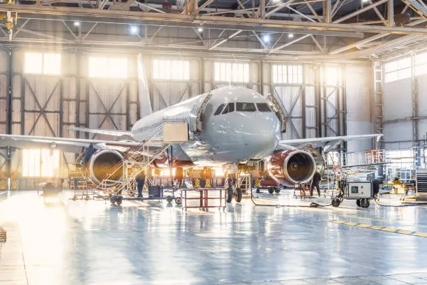
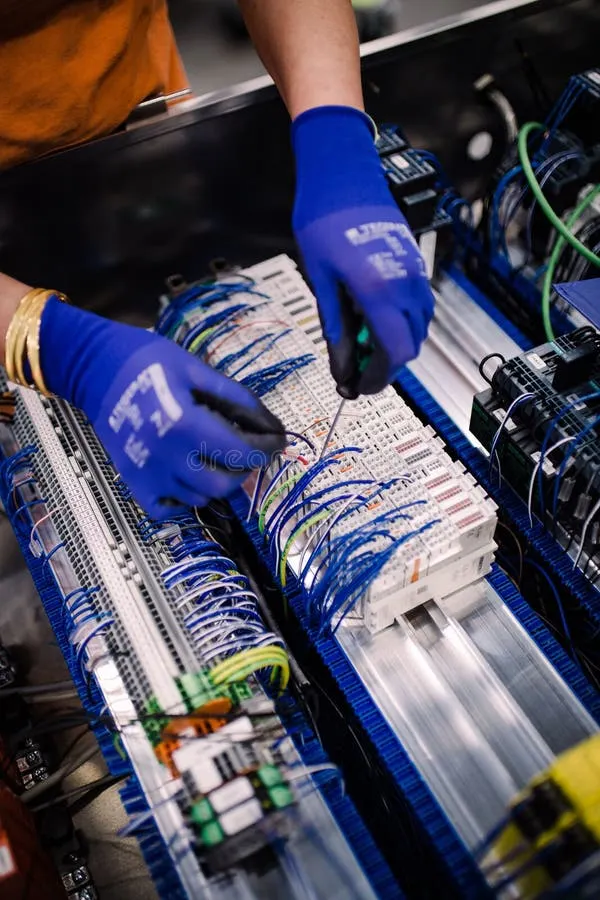

TUS UAC'S / MÓDULOS DE ESPECIALIDAD
Programación-Nv.1
Programación-Nv.2
Programación-Nv.3
Ciencia y datos de la información-Nv.1
Ciencia y datos de la información-Nv.2
Ciencia y datos de la información-Nv.3
Aeronáutica-Nv.1
Aeronáutica-Nv.2
Aeronáutica-Nv.3
Contabilidad-Nv.1
Contabilidad-Nv.2
Arquitectura-Nv.1
Arquitectura-Nv.2
Producción Industrial de Alimentos
Electromecánica-Nv.1
Electromecánica-Nv.2
Electromecánica-Nv.3
Lengua y Comunicación II
Inglés II
Pensamiento Matemático II
Cultura Digital II
Ciencias Sociales II
Conservación de la Energía y sus Interacciones con la Materia
❮
 
❯